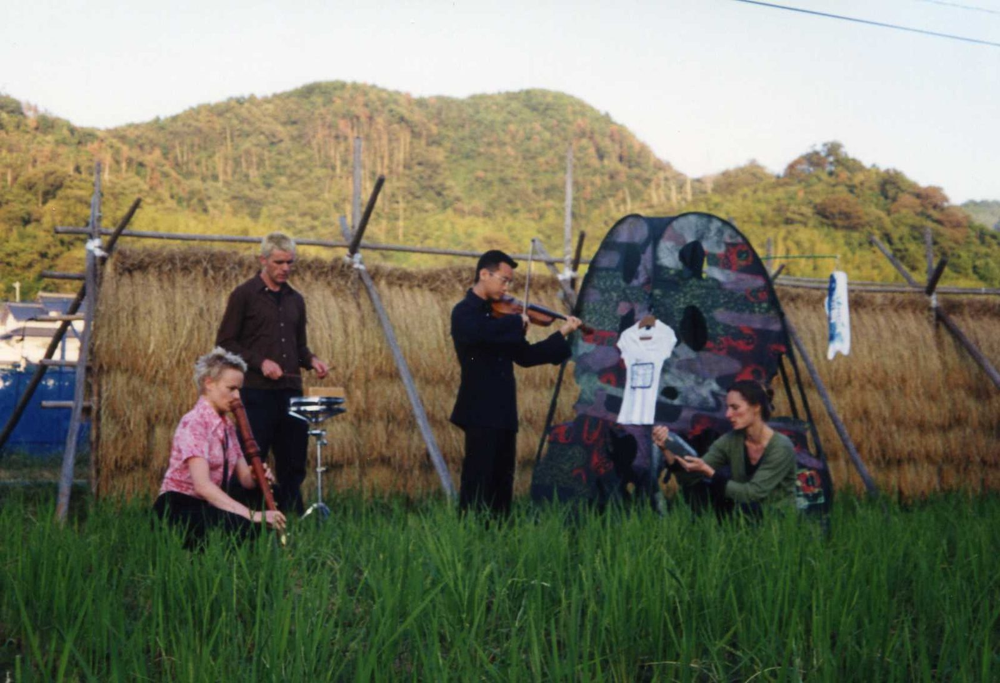

The question behind Ricefields was simple, and it changed everything that came after: what happens when the musical score leaves the page?
Collaborating with visual artists Sarah Pirrie and Rosemary Joy, we created a sculptural installation, inspired in part by the rural and urban landscape of Matsue, Japan. Graphic scores and performance instructions were added directly onto the installation elements — printed on a t-shirt, painted on a pole, embedded in the objects that surrounded the performers and the audience.
I had been composing chamber music for some years — notation on paper, performers reading from stands. The music was experimental, dense, alive to me, but it lived inside a convention that kept audiences at a distance. With Ricefields, the score became the room.

Four musicians interpreted this sculptural score live: soprano Deborah Kayser, recorder player Natasha Anderson, percussionist Peter Humble and Yasutaka Hemmi — a violinist from Matsue. Michael Hewes processed the sound in real time. Lisa Trewin lit the space. The audience inhabited the installation, touching sushi-shaped sponges embedded with microphones, becoming part of the score.
Ricefields began at La Mama in October 1998, then travelled first to Le Centre Chorégraphique in Belfort, France, in May 1999. Then to Yumeshuraku in Shimane and Gallery 21 in Ginza, Tokyo — before returning to Australia for seasons at MetroArts in Brisbane and the Performance Space in Sydney.
Yasutaka Hemmi had come to Melbourne to perform with us; now we travelled to his country and performed in his landscape — the landscape that had inspired the work in the first place. This model of artist-to-artist exchange, built on personal connection rather than institutional arrangement, became one of the defining patterns of Aphids. It was repeated with Juliana Hodkinson in Copenhagen for Maps. It only worked because it was personal.
Photographs
Film
Recording
Recycling from Ricefields, Melbourne 1998 — all movements on Archive.org
Further reading
Performance history
Credits